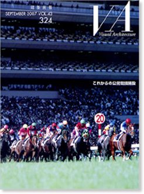

当サイトはJavaScriptをonにしてご覧ください。

NOVEMBER 2007 VOL.43 324
これからの公共競技施設
定価 3,300円（税込）
ISBN 978-4-901772-34-1
公営競技施設のこれから
日本中央競馬会 施設部 部長 宮入 篤
「新しい競馬」を感じられるような施設づくり
日本競馬施設株式会社 取締役 戸泉秀雄
新しい時代の公営競技施設
株式会社松田平田設計 代表取締役社長 中園正樹
今日の夢、昨日の記憶
株式会社安井建築設計事務所 代表取締役 佐野吉彦
公営競技よ世界に羽ばたけ
株式会社鎌田建築設計 代表取締役 鎌田守博
競 馬
東京競馬場
新潟競馬場
京都競馬場 増設スタンド［ビックスワン］
小倉競馬場
ウインズ新白河
ウインズ錦糸町東館
ウインズ米子
ウインズ佐世保
ウインズ汐留
ウインズ小倉
ウインズ新横浜
大井競馬場
競馬場施設雑感 ～大井競馬場の試み～ 特別区競馬組合 経営管理部 企画課長 斉藤 弘
オフトひたちなか
地方競馬場 ダイジェスト
香港ジョッキークラブ沙田競馬場パレードリング
競 輪
いわき平競輪場
函館競輪場
松山中央公園多目的競技場（であいフィールド）
りょうまスタジアム
北九州メディアドーム
競 艇
桐生競艇場
戸田競艇場
浜名湖競艇場
津モーターボート競走場 スタンド棟
びわこモーターボート競走場
芦屋競艇場
スタンド改修技術事例 住之江競艇場スタンド改修
ボートピア習志野
やまと競艇学校
オートレース
川口オートレース場 選手合宿・映像ホール
山陽オートレース場
奥付
VA Information
連載 ていじ手帳 その十二「乙女座」 伊藤ていじ